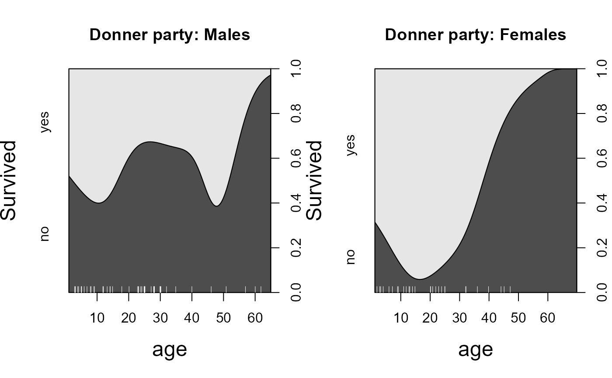

Survival in the Donner Party
Donner.RdThis data frame contains information on the members of the Donner Party, a group of people who attempted to migrate to California in 1846. They were trapped by an early blizzard on the eastern side of the Sierra Nevada mountains, and before they could be rescued, nearly half of the party had died.
What factors affected who lived and who died?
Usage
data(Donner)Format
A data frame with 90 observations on the following 5 variables.
familyfamily name, a factor with 10 levels
ageage of person, a numeric vector
sexa factor with levels
FemaleMalesurviveda numeric vector, 0 or 1
deathdate of death for those who died before rescue, a POSIXct
Details
This data frame uses the person's name as row labels.
family reflects a recoding of the last names of individuals
to reduce the number of factor levels.
The main families in the Donner party were: Donner, Graves, Breen and Reed.
The families of Murphy, Foster and Pike are grouped as 'MurFosPik',
those of Fosdick and Wolfinger are coded as 'FosdWolf', and
all others as 'Other'.
Source
D. K. Grayson, 1990, "Donner party deaths: A demographic assessment", J. Anthropological Research, 46, 223-242.
Johnson, K. (1996). Unfortunate Emigrants: Narratives of the Donner Party. Logan, UT: Utah State University Press. Additions, and dates of death from http://user.xmission.com/~octa/DonnerParty/Roster.htm.
References
Ramsey, F.L. and Schafer, D.W. (2002). The Statistical Sleuth: A Course in Methods of Data Analysis, (2nd ed), Duxbury.
Friendly, M. and Meyer, D. (2016). Discrete Data Analysis with R: Visualization and Modeling Techniques for Categorical and Count Data. Boca Raton, FL: Chapman & Hall/CRC. http://ddar.datavis.ca.
See also
donner in alr3,
case2001 in Sleuth2(adults only) provide similar data sets.
Examples
# conditional density plots
op <- par(mfrow=c(1,2), cex.lab=1.5)
cdplot(factor(survived) ~ age, subset=sex=='Male', data=Donner,
main="Donner party: Males", ylevels=2:1, ylab="Survived", yaxlabels=c("yes", "no"))
with(Donner, rug(jitter(age[sex=="Male"]), col="white", quiet=TRUE))
cdplot(factor(survived) ~ age, subset=sex=='Female', data=Donner,
main="Donner party: Females", ylevels=2:1, ylab="Survived", yaxlabels=c("yes", "no"))
with(Donner, rug(jitter(age[sex=="Female"]), col="white", quiet=TRUE))

par(op)
# fit some models
(mod1 <- glm(survived ~ age + sex, data=Donner, family=binomial))
#>
#> Call: glm(formula = survived ~ age + sex, family = binomial, data = Donner)
#>
#> Coefficients:
#> (Intercept) age sexMale
#> 1.5992 -0.0338 -1.2068
#>
#> Degrees of Freedom: 89 Total (i.e. Null); 87 Residual
#> Null Deviance: 124.4
#> Residual Deviance: 111.1 AIC: 117.1
(mod2 <- glm(survived ~ age * sex, data=Donner, family=binomial))
#>
#> Call: glm(formula = survived ~ age * sex, family = binomial, data = Donner)
#>
#> Coefficients:
#> (Intercept) age sexMale age:sexMale
#> 1.85515 -0.04565 -1.62177 0.01957
#>
#> Degrees of Freedom: 89 Total (i.e. Null); 86 Residual
#> Null Deviance: 124.4
#> Residual Deviance: 110.7 AIC: 118.7
anova(mod2, test="Chisq")
#> Analysis of Deviance Table
#>
#> Model: binomial, link: logit
#>
#> Response: survived
#>
#> Terms added sequentially (first to last)
#>
#>
#> Df Deviance Resid. Df Resid. Dev Pr(>Chi)
#> NULL 89 124.37
#> age 1 6.5113 88 117.86 0.010719 *
#> sex 1 6.7274 87 111.13 0.009494 **
#> age:sex 1 0.4003 86 110.73 0.526922
#> ---
#> Signif. codes: 0 '***' 0.001 '**' 0.01 '*' 0.05 '.' 0.1 ' ' 1
(mod3 <- glm(survived ~ poly(age,2) * sex, data=Donner, family=binomial))
#>
#> Call: glm(formula = survived ~ poly(age, 2) * sex, family = binomial,
#> data = Donner)
#>
#> Coefficients:
#> (Intercept) poly(age, 2)1 poly(age, 2)2
#> 0.7622 -26.9689 -30.5626
#> sexMale poly(age, 2)1:sexMale poly(age, 2)2:sexMale
#> -1.0996 22.7211 28.8976
#>
#> Degrees of Freedom: 89 Total (i.e. Null); 84 Residual
#> Null Deviance: 124.4
#> Residual Deviance: 97.8 AIC: 109.8
anova(mod3, test="Chisq")
#> Analysis of Deviance Table
#>
#> Model: binomial, link: logit
#>
#> Response: survived
#>
#> Terms added sequentially (first to last)
#>
#>
#> Df Deviance Resid. Df Resid. Dev Pr(>Chi)
#> NULL 89 124.366
#> poly(age, 2) 2 9.5441 87 114.822 0.008463 **
#> sex 1 8.0908 86 106.731 0.004449 **
#> poly(age, 2):sex 2 8.9321 84 97.799 0.011492 *
#> ---
#> Signif. codes: 0 '***' 0.001 '**' 0.01 '*' 0.05 '.' 0.1 ' ' 1
LRstats(glmlist(mod1, mod2, mod3))
#> Likelihood summary table:
#> AIC BIC LR Chisq Df Pr(>Chisq)
#> mod1 117.13 124.63 111.128 87 0.04159 *
#> mod2 118.73 128.73 110.727 86 0.03755 *
#> mod3 109.80 124.80 97.799 84 0.14408
#> ---
#> Signif. codes: 0 '***' 0.001 '**' 0.01 '*' 0.05 '.' 0.1 ' ' 1
# plot fitted probabilities from mod2 and mod3
# idea from: http://www.ling.upenn.edu/~joseff/rstudy/summer2010_ggplot2_intro.html
library(ggplot2)
# separate linear fits on age for M/F
ggplot(Donner, aes(age, survived, color = sex)) +
geom_point(position = position_jitter(height = 0.02, width = 0)) +
stat_smooth(method = "glm", method.args = list(family = binomial), formula = y ~ x,
alpha = 0.2, size=2, aes(fill = sex))
# separate quadratics
ggplot(Donner, aes(age, survived, color = sex)) +
geom_point(position = position_jitter(height = 0.02, width = 0)) +
stat_smooth(method = "glm", method.args = list(family = binomial), formula = y ~ poly(x,2),
alpha = 0.2, size=2, aes(fill = sex))